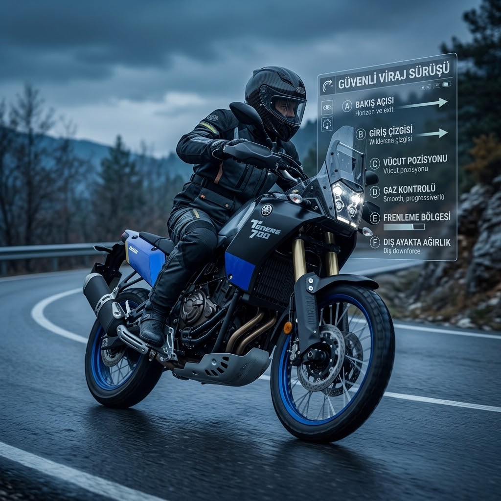
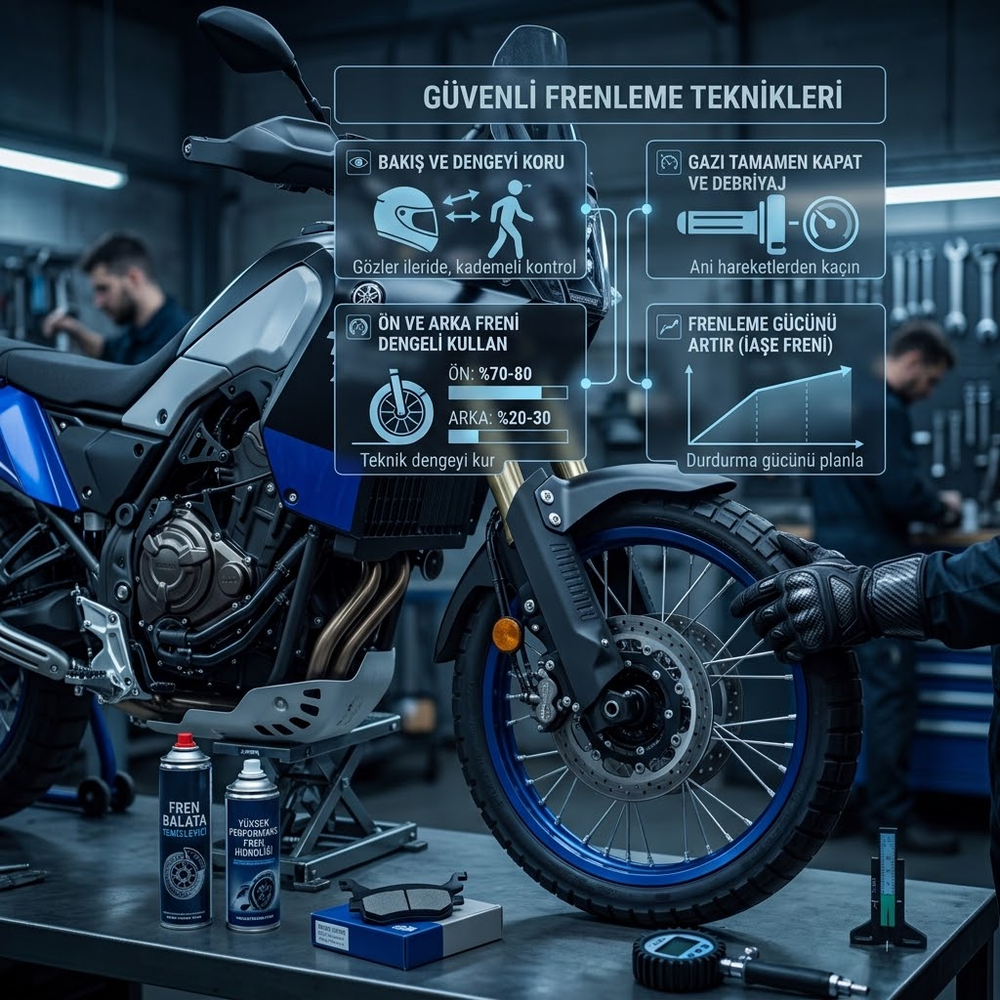
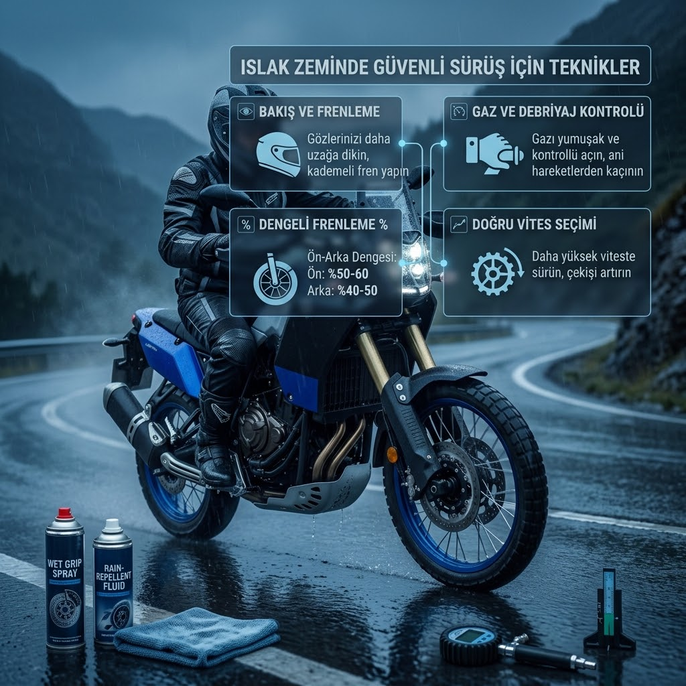
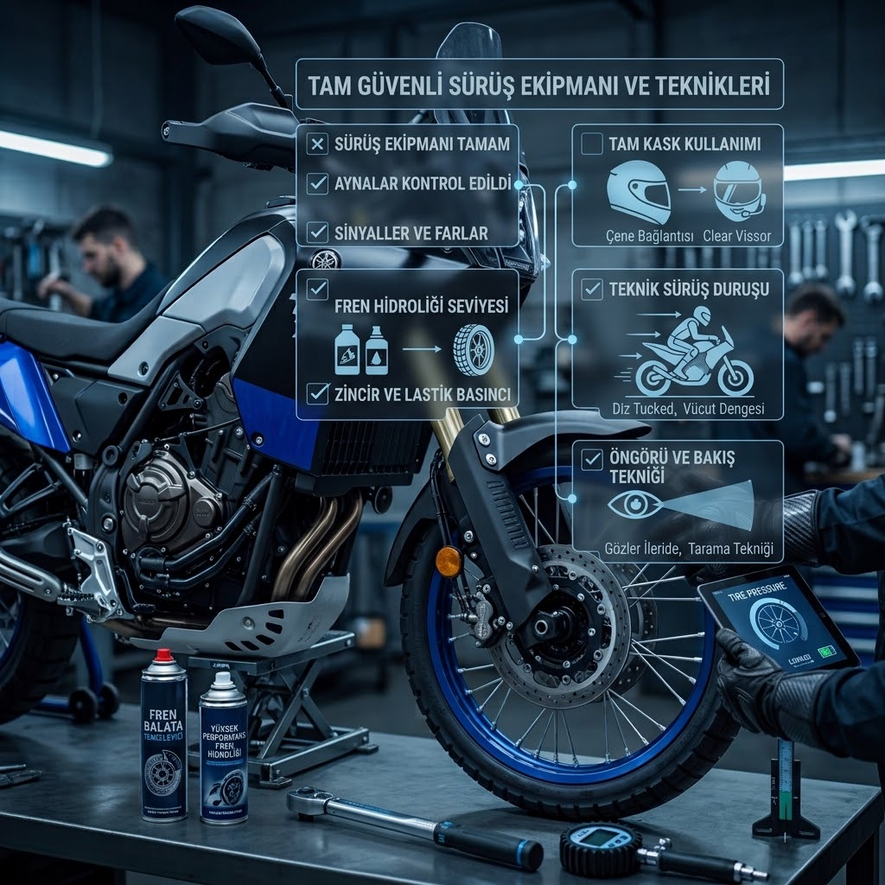
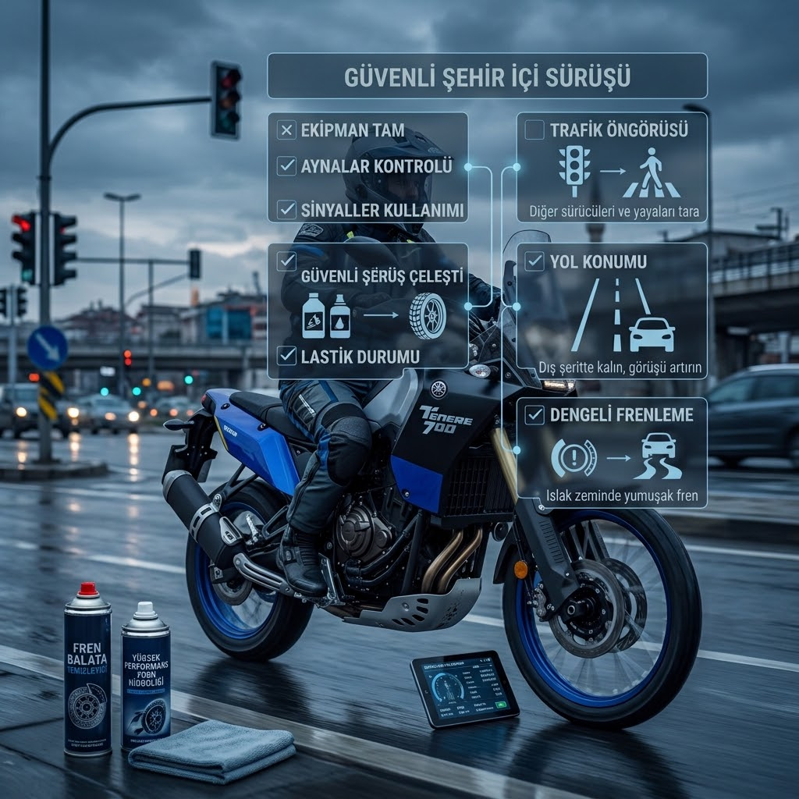
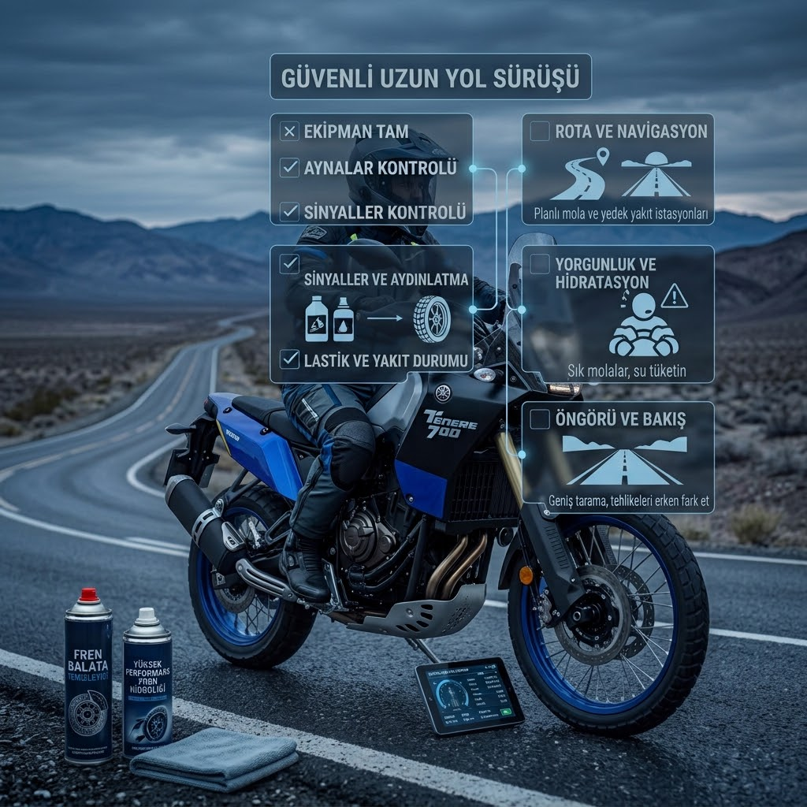

Sürüş Teknikleri

Virajlarda Sürüş
Virajlara doğru hızla girmek, bakış tekniği ve gaz kontrolü hakkında temel bilgiler.
Rehberi Gör
Frenleme Teknikleri
Güvenli frenleme, acil frenleme ve fren mesafesi hakkında temel bilgiler.
Rehberi Gör
Islak Zeminde Sürüş
Yağmurlu ve kaygan yollarda motosiklet kullanırken dikkat edilmesi gerekenler.
Rehberi Gör
Güvenli Sürüş
Takip mesafesi, görünürlük ve yol üzerindeki risklere karşı dikkat edilmesi gerekenler.
Rehberi Gör
Şehir İçinde Sürüş
Trafikte motosiklet kullanırken dikkat edilmesi gereken temel noktalar.
Rehberi Gör
Uzun Yolda Sürüş
Uzun yolculuklarda mola, yorgunluk, hız ve takip mesafesi hakkında bilgiler.
Rehberi Gör